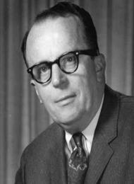
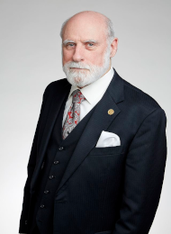
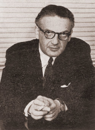

|  | .jpg "Robert Metcalfe.html") |
 | |
 |
 |  |
 |
Robert_Metcalfe
Született 1946 április 7.-én
Amerikai mérnök és vállalkozó, aki az 1970-es években hozzájárult az internet fejlesztéséhez. Társa volt az Ethernet feltalálása ,a 3Com társalapítója ,és megalkotta a Metcalfe-törvényt ,amely leírja a távközlési hálózatok hatását. A Metcalfe számos jóslatot is megfogalmazott, amelyek nem váltak be, beleértve az internet megszűnését az 1990-es években. A Metcalfe számos kitüntetést kapott, köztük az IEEE Medal of Honor-t és a National Medal of Technology and Innovation-t az Ethernet technológia fejlesztéséért végzett munkájáért. 2023-ban megkapta a Turing-díjat ,a számítástechnika legmagasabb elismerését. 2011 és 2021 között az austini Texasi Egyetem innovációs és vállalkozási professzora volt.
2023-ban megkapta a Turing-díjat , a számítástechnika legmagasabb elismerését. 2011 és 2021 között az austini Texasi Egyetem innovációs és vállalkozási professzora volt. A MAC-nál a Metcalfe volt a felelős néhány olyan hardver megépítéséért, amelyek összekapcsolják az MIT miniszámítógépeit az ARPAnet-tel. Azonosította és kijavította az AlohaNet modell néhány hibáját, majd hozzáadta ezt a munkát átdolgozott dolgozatához. Ezután a Harvard elfogadta, és megszerezte a PhD fokozatot. 1979-ben Metcalfe kilépett a PARC-ból, és társalapítója volt a 3Com, egy számítógépes hálózati berendezéseket gyártó cégnek Palo Alto- i lakásában. A 3Com a hálózati megoldások vezető szolgáltatójává vált, az Ethernet pedig a helyi hálózatok (LAN) domináns hálózati szabványává vált. 1980-ban megkapta az ACM Grace Hopper-díjat a helyi hálózatok, különösen az Ethernet fejlesztéséhez való hozzájárulásáért.
1996-ban társalapítója volt a Pop!Tech vezetői technológiai konferenciának. 2001-ben kockázati tőkebefektető lett , majd a Polaris Venture Partners általános partnere. 2019-ben pedig ő tartotta a Bernard Price-emlékelőadást Dél-Afrikában. 2022 júniusában Metcalfe visszatért az MIT-hez, amikor csatlakozott a Számítástechnikai és Mesterséges Intelligencia Laboratóriumhoz kutatási társvállalatként és számítástechnikai mérnökként, az MIT Julia Laborral együttműködve. Metcalfe 2007-ben bekerült a Nemzeti Feltalálók Hírességek Csarnokába az Ethernet technológiával végzett munkájáért. 2008-ban megkapta a Fellow Award-ot a Számítógéptörténeti Múzeumtól az Ethernet feltalálásához, szabványosításához és kereskedelmi forgalomba hozatalához nyújtott alapvető hozzájárulásáért.
Munkásásga